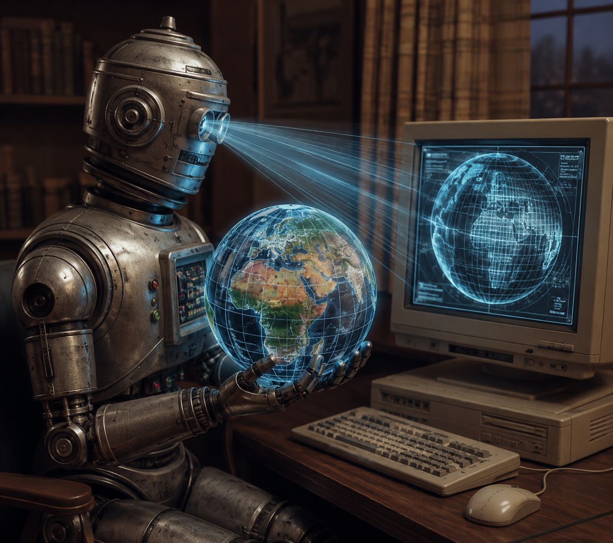

View on GitHub →servo-agent
A browser our agents can read — a web engine that gives life to the page.
Follow the current · the live web becomes a page you control

View on GitHub →A browser our agents can read — a web engine that gives life to the page.
Follow the current · the live web becomes a page you control